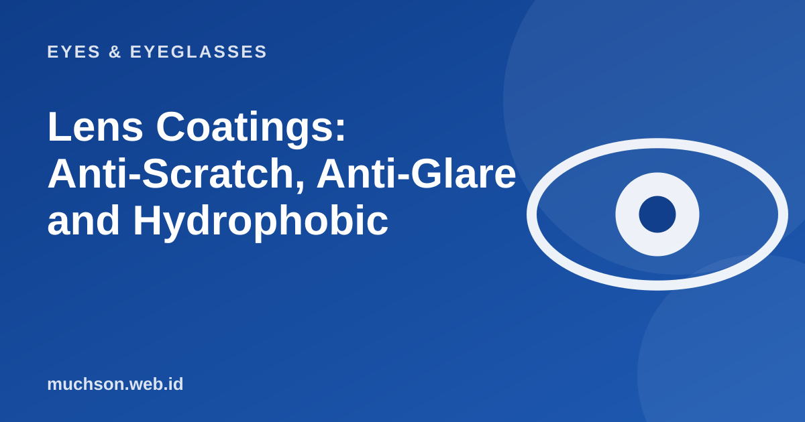

Home › Articles › Eyes & Eyeglasses
Eyes & EyeglassesLens Coatings: Anti-Scratch, Anti-Glare and Hydrophobic
Two lenses with the same prescription can cost different amounts because of the coatings on the surface. Some coatings are useful every day and some are just decoration. Let us look at them one by one.

Common coatings
Text description of the diagram
- Water- and smudge-repellent (hydrophobic/oleophobic): Droplets and fingerprints wipe off easily
- Anti-reflective (anti-glare): Reduces reflections so the lens looks clearer
- Anti-scratch (hard coat): Hardens the surface and reduces fine scratches
- Lens material: Organic plastic or polycarbonate
Which should you choose?
| Need | The most useful coating |
|---|---|
| Working at a screen, driving at night | Anti-reflective |
| Children, active use | Anti-scratch and polycarbonate lenses (more impact-resistant) |
| Often sweaty, oily skin, or rain | Hydrophobic / oleophobic |
| Often outdoors | Anti-UV (make sure it is included) |
Warning
A good coating does not replace the right way of cleaning. Wiping dry lenses with a shirt or tissue creates scratches.
FAQ
Do all lenses already have a coating?
Not always. Standard lenses usually have only a basic hard coat. Anti-reflective and hydrophobic coatings are often optional or come in certain packages.
Why do anti-reflective lenses show a green or purple glow?
It is the leftover reflection from the anti-reflective layer, and it is normal. The colour and strength differ between products.
How do I care for lenses with a coating?
Rinse with water, then clean with a lens cleaner and a microfibre cloth. Avoid rough tissue, clothing and strong alcohol.